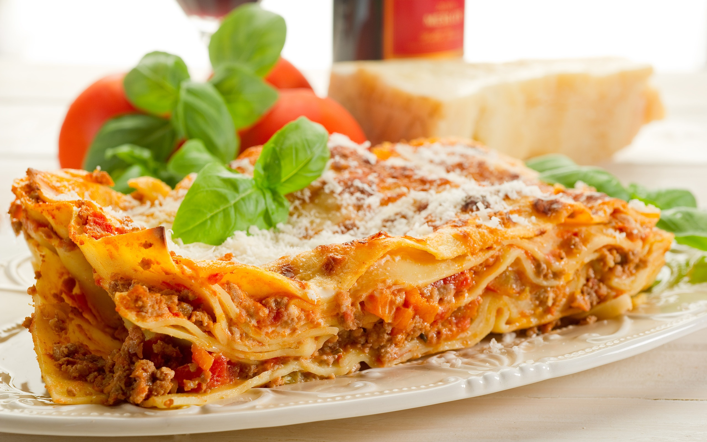

Lasanha a bolonhesa
Ingredientes
- 3 colheres (sopa) de azeite
- 1 cebola picada
- 200 g de carne magra bovina (patinho) cortada na ponta da faca
- 1 cenoura pequena picadinha
- 1 talo de salsão (aipo) picadinho
- ½ xícara (chá) de vinho tinto seco
- 1 xícara (chá) de caldo de carne (½ tablete de caldo de carne dissolvido em 1 xícara de chá de água)
- 250 g de molho de tomate de sua preferência
- Sal e pimenta do reino a gosto
- 800 g de massa de lasanha fresca e cozida al dente
- 250 g de queijo parmesão ralado
- 20 g de manteiga cortada em cubinhos
Modo de Preparo
- Numa panela em fogo médio coloque azeite e doure a cebola. Adicione a carne magra bovina (patinho), a carne suína (palheta), a cenoura e o salsão e deixe refogar.
- Acrescente o vinho e deixe secar.
- Coloque o caldo de carne, o molho de tomate de sua preferência, sal e pimenta-do-reino e cozinhe por 10 minutos.
- Num refratário ou assadeira retangular (36cm X 28cm) forre o fundo com um pouco de molho bolonhesa e, por cima, coloque uma camada de massa de lasanha fresca e cozida al dente.
- Coloque outra camada de molho bolonhesa e polvilhe queijo parmesão ralado.
- Repita novamente as camadas de massa, molho e queijo parmesão e termine com uma camada de massa.
- Por cima de tudo polvilhe queijo parmesão ralado a gosto e a manteiga.
- Leve ao forno médio preaquecido a 180°C por cerca de 25 minutos.
- Sirva em seguida.